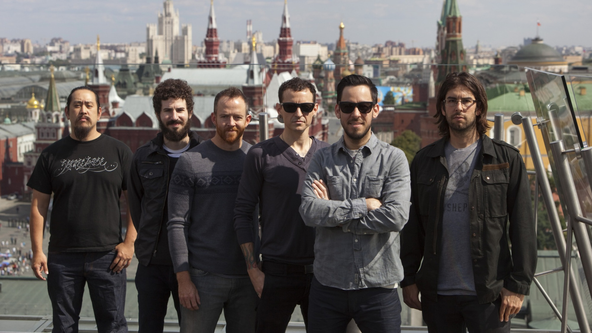
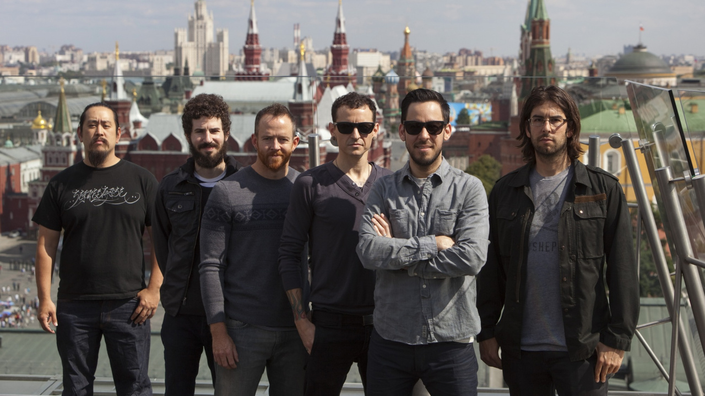

Hybrid Theory
Год: 2000Дебютный альбом американской рок-группы Linkin Park, выпущенный 24 октября 2000 года на лейбле Warner Bros. Название для альбома было взято из предыдущего названия группы. Диск имел огромный коммерческий успех. В 2001 году в США было продано почти 5 миллионов копий альбома, что сделало Hybrid Theory самым продаваемым альбомом года в стране. Альбом поднялся на вторую позицию в американском чарте Billboard 200, а также занял высокие позиции в других мировых чартах.